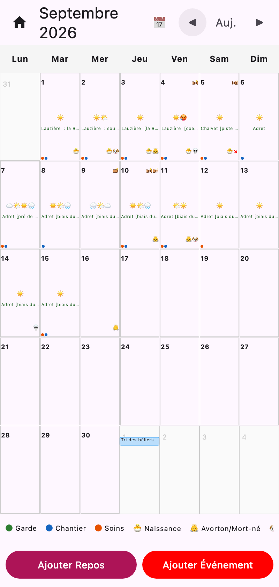
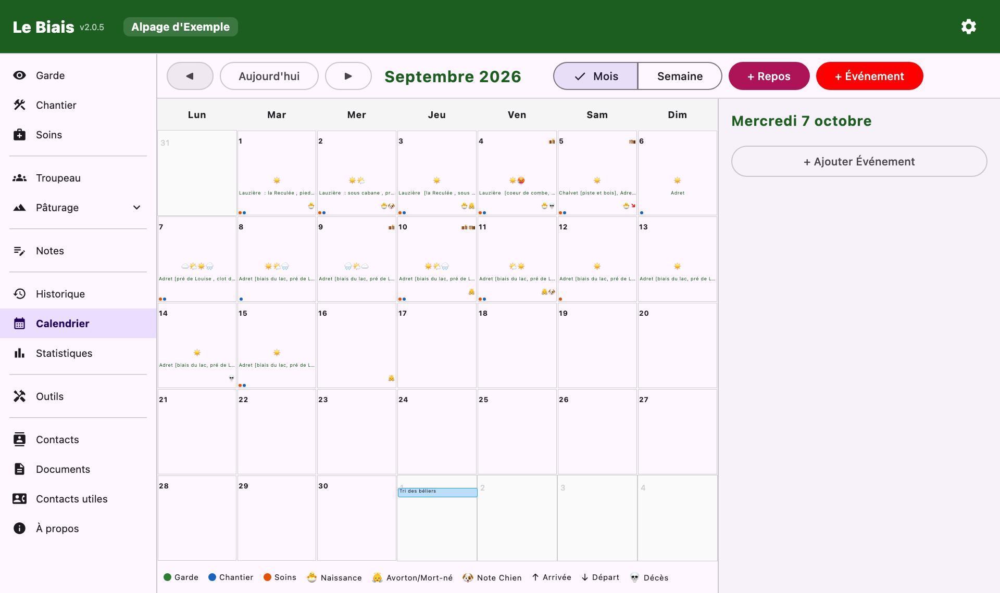
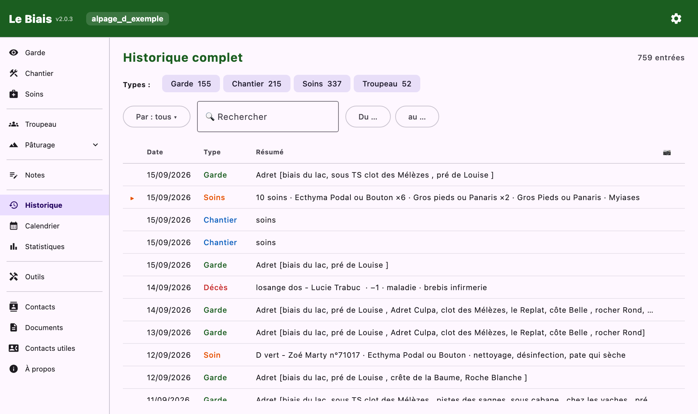
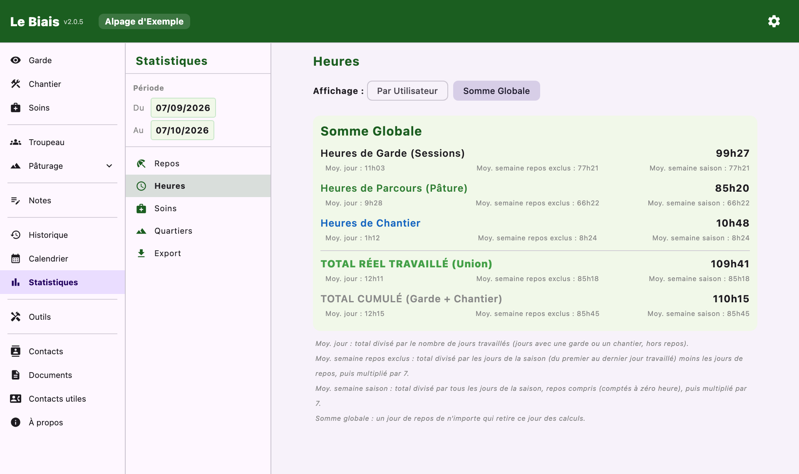

Relire la saison : jour par jour, en chiffres, ou sur papier.
Deux vues, au choix : par mois (une grille où chaque jour porte ses pictogrammes) ou par semaine (un agenda heure par heure avec les sessions de garde et de chantier).
Le calendrier réunit tout ce que l'application sait d'une journée :
Un appui sur un jour en donne le détail ; chaque ligne mène à la saisie d'origine.


Le fil de tout ce qui a été saisi, du plus récent au plus ancien : gardes, chantiers, soins, mouvements, comptages, naissances, bêtes égarées…
🔍 Filtres & Recherche combine : types d'activité, utilisateur, texte libre, et — pour les bêtes — marque, numéro de boucle, catégorie d'animal. Chaque entrée s'ouvre et se modifie (✏️ Modifier). Sur grand écran, l'historique devient un registre en colonnes, avec filtre par dates et résumé.

On choisit une période (début, fin), puis un onglet. Deux affichages : Par Utilisateur ou Somme Globale.
| Onglet | Ce qu'il montre |
|---|---|
| Repos | Par personne : jours de repos pris, à prendre (déjà posés dans le calendrier), total. |
| Heures | Heures de garde, de parcours, de chantier, total réel travaillé et total cumulé (définitions), avec trois moyennes. |
| Soins | Nombre de soins par catégorie et par pathologie, puis par marque : soins, bêtes soignées, part du troupeau. |
| Quartiers | Le temps passé sur chaque quartier et sous-quartier, et la relecture de la saison sur la carte. |
| Export | La fabrication des documents PDF (ci-dessous). |

L'onglet Export des statistiques produit, pour la période choisie, les documents à remettre ou à garder :
| Section | Contenu |
|---|---|
| Fiches horaires | Semaine par semaine et par personne : heures de chaque jour, totaux, repos signalés. |
| Carnet de bord | Chaque journée : frise du temps, événements numérotés, météo, quartiers pâturés, soins, naissances, mouvements, notes. |
| Carnet de soins | Tous les soins et naissances de la période, en détail. |
| Fiches récapitulatives des soins par marque | Un tableau par éleveur : boucle, soins effectués, produit injecté. |
| Mouvement de bêtes | Arrivées, départs, décès, et le bilan : effectif en début et en fin de période. |
| Carnet de pâturage | Par quartier : pâturage prévu, pâturage réalisé, carte, notes, équipements et toponymes. Les défens qui touchent le quartier sont hachurés sur sa carte, avec leurs dates, et listés dessous avec leur motif ; ceux qui ne touchent aucun quartier sont réunis en fin de carnet. Sur le papier, tous sont hachurés, levés ou non : ce sont les dates qui font foi. |
Configurer l'export règle :